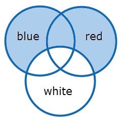

NOT white |  |
Syntax | Semantics | Recommended Use |
|---|---|---|
NOT (query) | Where NOT is used stand-alone (Boolean context) and is combined with a term, phrase or other query. Note: 'NOT(a b c)' is not similar to 'NOT(a) NOT(b) NOT(c)', which is an ambiguous search query and will generate an error. | This query will narrow down your result set. Used when you want to find all files where a specific term, phrase or result from a specific query is not present. |
NOT(first_query) second_query n_query first_query NOT(second_query) n_query | Where NOT, used in a positional context , excludes a query placed in a sequence. NOT can be placed anywhere in a sequence. | Used when you want to specifically omit (at a specific position in the sequence) a word or sequence of words usually connected with the other queries. |
left_query TO right_query {sub_query} |
NOT is used in a
positional context
, in the sub query of a TO query. See
TO Operator.
| Used when you want to specifically omit a term or phrase often related to the terms found between the left_ and right_query. |
Boolean Context
Example of query | Results | Results Explained |
|---|---|---|
NOT apple | All files that do not contain 'apple'. | Narrow your search and look for files that do not contain the query after NOT. |
Positional Context
Example of query | Results | Results Explained |
|---|---|---|
warm NOT(green) tea | warm black tea, warm white tea, warm warm tea, warm [anything but green] tea |
|
For complex search queries containing the operator NOT, see Complex Search Queries.